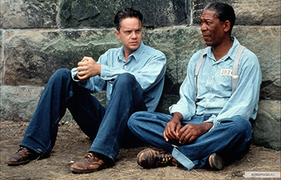
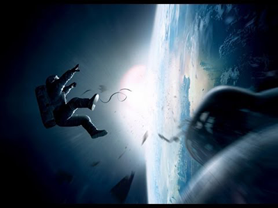

Звёздные войны
Культовая фантастическая франшиза в жанре космической оперы, включающая в себя 9 кинофильмов, а также анимационные сериалы, мультфильмы, телефильмы, книги, комиксы, видеоигры, игрушки и прочие произведения, созданные в рамках единой фантастической Вселенной «Звёздных войн».

Пираты Карибского моря
Серия приключенческих фильмов о пиратах в Карибском море. Главный герой на протяжении всех частей — пиратский капитан Джек Воробей (Джонни Депп). Центральные персонажи — пиратский/британский капитан Гектор Барбосса (Джеффри Раш), пиратский боцман Джошами Гиббс (Кевин МакНелли), кузнец и сын пирата Уилл Тёрнер (Орландо Блум), дочь губернатора Элизабет Суонн (Кира Найтли).

Матрица
Американский научно-фантастический боевик, снятый Эндрю и Лоуренсом Вачовски. Фильм изображает будущее, в котором реальность, существующая для большинства людей, есть в действительности симуляция типа «мозг в колбе», созданная разумными машинами, чтобы подчинить и усмирить человеческое население, в то время как тепло и электрическая активность их тел используются машинами в качестве источника энергии.

Назад в будущее
Научно-фантастический фильм в трёх частях о путешествиях во времени, описывающий альтернативные реальности маленького американского городка Хилл-Вэлли и нескольких проживающих там семей. По сюжету доктор Эмметт Браун 30 лет изобретал машину времени и, наконец, в 1985 году он закончил работу над ней, установив энергетический флюксуатор (в других переводах — потоковый накопитель и поточный конденсатор) в автомобиле DeLorean DMC-12.
Марсианин
Земная экспедиция Ares III, высадившаяся на Марсе в районе Ацидалийской равнины, попадает в песчаную бурю. Группе из шести астронавтов приходится досрочно покинуть планету и отправиться домой. При переходе к взлётной площадке ботаника Марка Уотни сметает элементом спутниковой антенны и уносит бурей. Биомонитор астронавта оказался повреждён. Руководитель миссии Мелисса Льюис, не найдя его и сочтя погибшим, отдаёт приказ на старт.

Побег из Шоушенка
Успешный банкир Энди Дюфрейн обвинен в убийстве собственной жены и ее любовника. Оказавшись в тюрьме под названием Шоушенк, он сталкивается с жестокостью и беззаконием, царящими по обе стороны решетки. Каждый, кто попадает в эти стены, становится их рабом до конца жизни. Но Энди, вооруженный живым умом и доброй душой, отказывается мириться с приговором судьбы и начинает разрабатывать невероятно дерзкий план своего освобождения.

Гравитация
Доктор Райан Стоун, блестящий специалист в области медицинского инжиниринга, отправляется в свою первую космическую миссию под командованием ветерана астронавтики Мэтта Ковальски, для которого этот полет — последний перед отставкой. Но во время, казалось бы, рутинной работы за бортом случается катастрофа. Шаттл уничтожен, а Стоун и Ковальски остаются совершенно одни; они находятся в связке друг с другом, и все, что они могут, — это двигаться по орбите в абсолютно черном пространстве без всякой связи с Землей и какой-либо надежды на спасение.
Интерстеллар
В недалёком будущем из-за развития патогенных бактерий концентрация кислорода в атмосфере Земли необратимо падает, что вызывает ухудшение климата и грозит неминуемой гибелью человечества. Бывший пилот НАСА Купер ведёт фермерское хозяйство со своей семьёй в американской глубинке, страдая от неурожая и пыльных бурь. Его дочь Мёрф рассказывает о том, что её комнату посещает призрак и сбрасывает книги с полки. Купер, разобравшись, понимает, что аномальные явления не выдумка, и даже обнаруживает вместе с дочерью закономерности в действиях призрака. Проанализировав их, он вычисляет координаты некоего объекта, оказавшегося секретным подразделением НАСА.